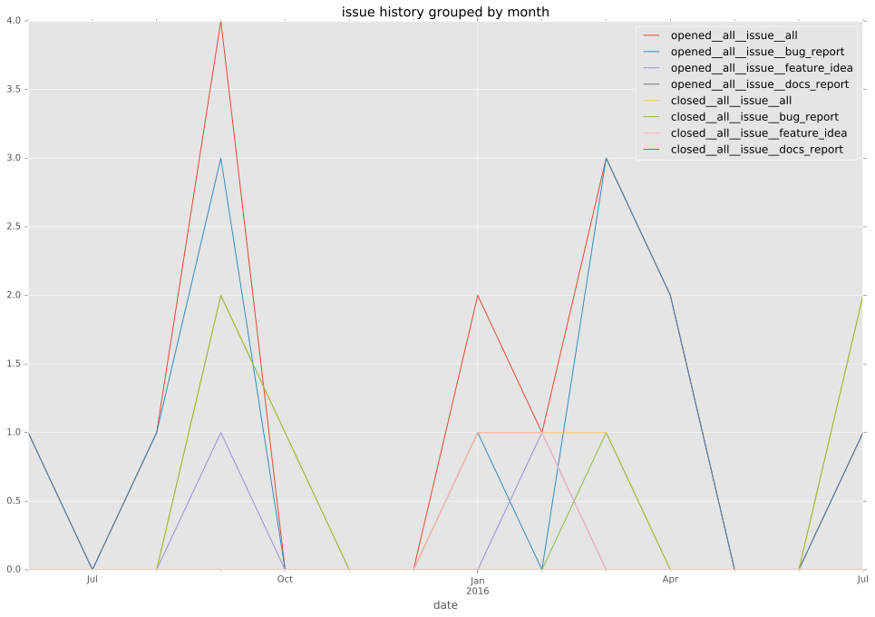
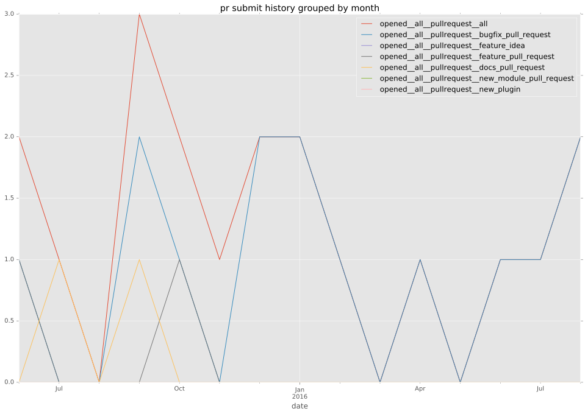
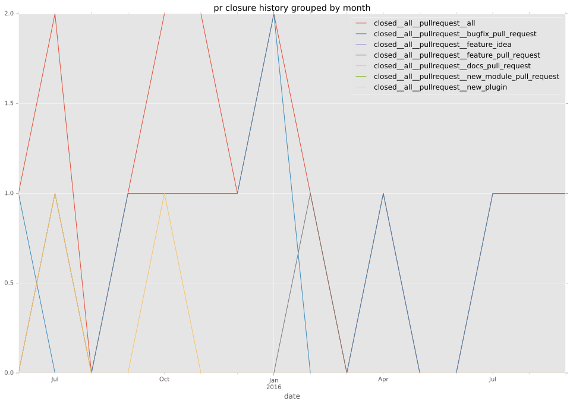

total issue counts
feature pull request: 2
docs report: 1
pullrequest: 21
docs pull request: 3
bugfix pull request: 14
feature idea: 1
issue: 15
new plugin: 1
bug report: 14
issue history

pullrequest history


days open by issue type
bugfix pull request
count: 20
std: 19.4338283467
min: 0
max: 66
median: 11.0
mean: 18.9
all
count: 43
std: 42.2538995429
min: 0
max: 163
median: 11.0
mean: 30.5813953488
pullrequest
count: 0
std: nan
min: nan
max: nan
median: nan
mean: nan
docs pull request
count: 6
std: 10.8443533694
min: 0
max: 21
median: 0.0
mean: 7.0
docs report
count: 0
std: nan
min: nan
max: nan
median: nan
mean: nan
feature pull request
count: 4
std: 61.7764788033
min: 15
max: 122
median: 68.5
mean: 68.5
feature idea
count: 1
std: nan
min: 122
max: 122
median: 122.0
mean: 122.0
issue
count: 0
std: nan
min: nan
max: nan
median: nan
mean: nan
new plugin
count: 2
std: 0.0
min: 97
max: 97
median: 97.0
mean: 97.0
bug report
count: 10
std: 54.5450883826
min: 0
max: 163
median: 6.5
mean: 30.5
closures grouped by total days open